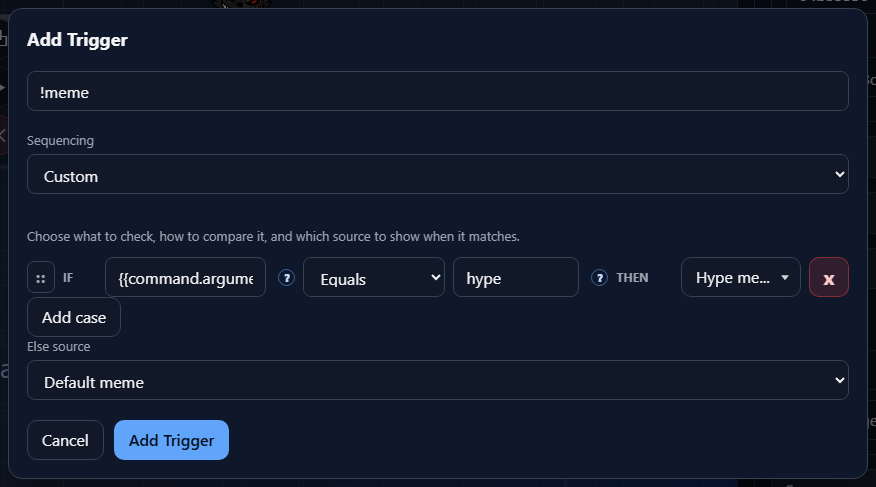

Inside Component
IF/Else Control
The IF/Else control is the rule builder used when a trigger needs conditional behavior. It checks trigger data, chooses a result when a rule matches, and falls back to an Else result when nothing matches.
Purpose

In Add Trigger, this control appears in Custom sequencing and raw trigger hit rules. Custom sequencing uses IF/THEN rows to choose which source should run. Raw hit rules use the same IF structure to decide whether a raw event should count as a trigger.
Rule Row
Each row reads as a sentence: IF this trigger value matches this comparison, THEN use this result.
IF{{message.text}}, {{user.name}}, or {{command.arguments[0]}}.OperatorCompare toTHENXOperators
The available operators change based on the type of the token on the left side.
StringExists, Equals, Does not equal, Contains, Does not contain, Starts with, and Ends with.NumberExists, Equals, Does not equal, Greater than, and Less than.BooleanExists, Equals, and Does not equal. The comparison value becomes a true/false selector.ExistsTHEN Result
The result column changes depending on where the IF/Else control is used.
Add Trigger Custom sequencingRaw hit rulesTrigger when the raw event should run the box, or False when the matching event should be ignored.Reorder And Nest
The four-dot control at the start of each row is the drag handle. Drag it up or down to reorder rules. Drag it onto the middle of another rule to nest it under that rule.
Order matters. NekoBot evaluates the rule structure from top to bottom, so place the most specific cases above broader fallback-style cases.
Else Fallback
Else source is the fallback result for Custom sequencing. If none of the IF rows match, NekoBot uses the Else source instead. Keep this set to a safe default source so the trigger still has a predictable result.